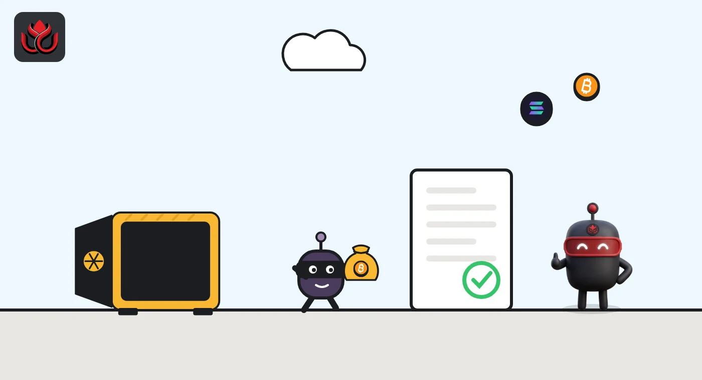
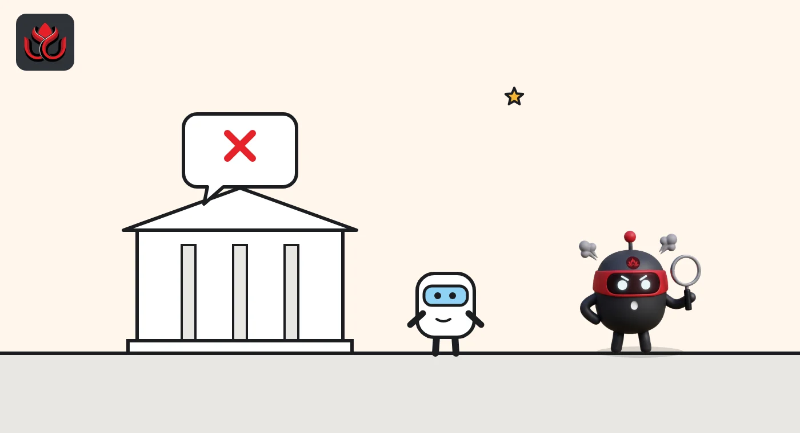

Japan crypto rules explained: FSA registration, 95% cold storage and 2x leverage
Crypto exchanges in Japan must register with the Financial Services Agency under the Payment Services Act, keep at least 95% of customer coins offline, and cap retail leverage at 2x. A 2026 government bill would revise the rules again, borrowing from securities law.
Key points
- Japan has required crypto exchanges to register with the FSA since April 2017. Running one without registration can bring up to three years in prison, a fine of up to 3 million yen, or both.
- Since May 2020, at least 95% of users' crypto must be held offline, and retail crypto derivatives need a 50% margin, which works out to 2x maximum leverage.
- Japanese crypto exchanges had more than 12 million accounts and more than 5 trillion yen in user deposits, the FSA said in April 2025.
- In April 2026 the Cabinet approved a bill to amend the Financial Instruments and Exchange Act and the Payment Services Act, including a framework for revising crypto rules.
Who regulates crypto in Japan?
The Financial Services Agency (FSA) is Japan's financial regulator. Firms that buy, sell or exchange crypto for customers are regulated under the Payment Services Act (PSA), and under the self-regulatory rules of the Japan Virtual and Crypto assets Exchange Association (JVCEA), the industry body, according to an FSA discussion paper from April 2025.
Crypto exchange operators must be registered with the FSA or a Local Finance Bureau, the FSA says on its warning list page. Providing crypto exchange services without registration is a crime, punishable by up to three years in prison, a fine of up to 3 million yen, or both, the 2025 paper says.
The FSA said the PSA and the JVCEA's rules together form a system broadly similar to the one for financial instruments firms under the Financial Instruments and Exchange Act. Crypto derivatives, such as leveraged contracts, have fallen under that securities law since May 2020, according to the FSA's 2022 overview.
How did Japan's crypto rules develop?
Japan was one of the first countries to write crypto exchange rules, largely because of two big hacks. The FSA's own 2022 overview lays out the steps:
- April 2017: a 2016 reform of the PSA took effect, creating registration for crypto exchanges, identity checks for new accounts, and rules on minimum capital and keeping customer assets separate. It followed the collapse of Mt. Gox, where about US$480 million in customer crypto leaked out.
- 2018: after about US$530 million leaked from Coincheck, an FSA study group met 11 times between April and December.
- May 2020: a 2019 reform brought crypto derivatives under the Financial Instruments and Exchange Act (FIEA), tightened advertising rules and required that at least 95% of users' crypto be held offline. Retail derivatives need a minimum margin of 50%, equal to 2x maximum leverage.
- June 2023: a 2022 reform let banks, money transfer firms and trust companies issue stablecoins and created registration for firms that trade them.
Customer crypto lost in the hacks that shaped Japan's rules
US$ million
Source: FSA, overview of Japan's crypto asset regulation (December 2022).

How big is Japan's crypto market?
Bigger than many people assume. In its April 2025 discussion paper, the FSA said Japanese crypto exchanges had more than 12 million accounts and more than 5 trillion yen in user deposits.
About 7.3% of Japanese investors with investment experience held crypto, the paper said, a higher share than held foreign exchange products or corporate bonds. The FSA also said it received more than 300 crypto complaints and inquiries a month on average.
Those numbers were part of the FSA's case for change: crypto had become a mainstream investment for many households, but the rules were still built mainly around payments.
How does Japan treat stablecoins?
Since the 2022 reform took effect in June 2023, stablecoins backed by money are treated as "electronic payment instruments." Only banks, registered money transfer firms and trust companies may issue them, and firms that trade them need their own registration, according to the FSA's overview.
The rules keep evolving. On May 22, 2026, the government promulgated cabinet orders for a 2025 PSA amendment covering electronic payment instruments and crypto assets, the FSA's weekly review shows.

Can people in Japan use offshore exchanges?
Not legally, if the exchange serves Japanese residents without registering. The FSA publishes a list of firms it has warned for offering crypto exchange services to people in Japan without registration. The overseas list includes Binance (2018 and 2021), Bybit (2021, 2023 and 2024), MEXC and Bitget (2023 and 2024), KuCoin and bitcastle (2024), and Izakaya Limited (September 2026).
The FSA notes that the status, names and addresses of listed firms may have changed since the warnings, and that firms not on the list may also be unregistered.
What is changing in 2026?
In its April 2025 discussion paper, the FSA said FIEA tools could better handle disclosure, fraud and fair pricing in crypto. It floated two groups: tokens used to raise money for a project, whose issuers would have to disclose information, and all others, such as bitcoin, ether and meme coins, where exchanges would disclose key information. It also proposed closing a gap on insider trading, with three options covered below.
On April 10, 2026, Minister Katayama Satsuki said the Cabinet had approved a bill amending the FIEA and the PSA, including "developing the legal framework for revising the rules applicable to crypto-assets," and asked the Diet to deliberate it quickly, according to the press conference transcript. LC Insight could not confirm from the FSA's English pages whether the bill has been enacted.
The FSA is also looking further ahead. A cross-ministry forum on on-chain finance met for the first time on September 30, 2026, and plans an interim report and roadmap in early 2027, its minutes say.
How could insider trading rules work for crypto?
Japan's securities law does not directly ban insider trading in crypto, the FSA said in its 2025 paper. It set out three options:
- Option A: define "material facts" in general terms, as the EU and South Korea do.
- Option B: write formal offenses with specific categories of material facts, like the rules for listed shares.
- Option C: adopt a broad ban on wrongful conduct, similar to the US approach, with the worst cases spelled out in guidelines.
The FSA presented these as ideas to study, not final decisions, and stressed balancing user protection with innovation. Banks have a role too: trust banks have been allowed to offer crypto custody since October 2022, according to the FSA's overview.
What are the risks?
Registration does not make crypto safe. Prices can swing sharply, and the cold wallet rule limits but does not remove hack risk. Large exchange hacks still happen worldwide, as Binance's record loss in October 2026 showed.
Users of unregistered platforms have even less protection, since those firms are outside the FSA's registration, cold storage and leverage rules.
LC Insight analysis
This section is our reading of the facts above, not a statement of fact.
- We think Japan's rules are a direct product of Mt. Gox and Coincheck. The 95% cold storage rule and 2x leverage cap trade growth for safety, and Japan has been willing to accept that cost.
- The likely next step is a shift toward securities-style regulation, with disclosure and insider trading rules. That would make Japan's crypto market look more like its stock market.
- The real tension is between home rules and offshore platforms. As long as unregistered exchanges offer more leverage and more tokens, some Japanese traders will be tempted to use them despite the warnings.
What's next
- Enactment and start date of the 2026 FIEA and PSA amendment bill
- Detailed rules on crypto insider trading and disclosure
- The on-chain finance forum's roadmap in early 2027
Frequently asked questions
Do crypto exchanges need a license in Japan?
They must register with the FSA or a Local Finance Bureau under the Payment Services Act. Operating without registration can bring up to three years in prison, a fine of up to 3 million yen, or both.
What is the maximum crypto leverage in Japan?
For retail crypto derivatives, the minimum margin is 50%, which equals 2x leverage.
How much crypto must Japanese exchanges keep offline?
At least 95% of users' crypto must be held offline in cold storage, under rules in force since May 2020.
Who can issue stablecoins in Japan?
Banks, registered money transfer firms and trust companies, under rules in force since June 2023.
Disclaimer. This article is based on public information and the sources listed below as of the update time shown. It is for information only and is not investment, legal or tax advice. Figures may change as companies and authorities publish new data.
Sources
- FSA, overview of crypto asset regulation in Japan (December 2022)
- FSA, Examination of the Regulatory Systems Related to Cryptoassets (April 10, 2025)
- FSA, press conference by Minister Katayama (April 10, 2026)
- FSA Weekly Review No. 688 (May 26, 2026)
- FSA, names of unregistered crypto exchange service providers warned (in Japanese)
- FSA, minutes of the first Onchain Finance Forum for the AI Era meeting (September 30, 2026, in Japanese)